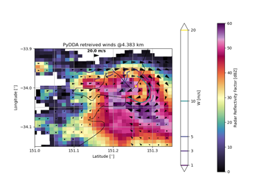

PyDDA Example Gallery#
Different examples are given on how to retrieve winds using HRRR and radar data.
Example grid data files for Hurricane Florence are available at:
https://drive.google.com/drive/folders/1pcQxWRJV78xuJePTZnlXPPpMe1qut0ie



Example of a wind retrieval in a tornado over Sydney
Example of a wind retrieval in a tornado over Sydney

Example on geographic plotting and constraint variation
Example on geographic plotting and constraint variation